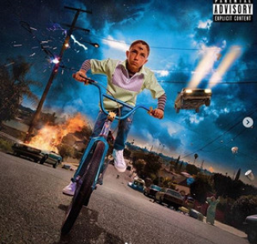
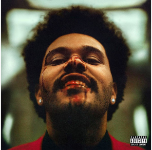
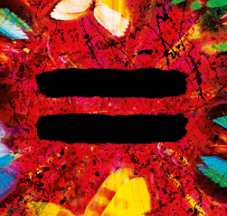
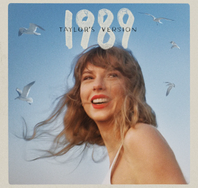
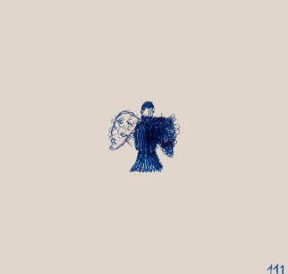

Albumes

El álbum "Un Verano Sin Ti" de Bad Bunny fusiona reggaetón y trap, explorando temas de amor y desamor con ritmos pegajosos.

El álbum "After Hours" de The Weeknd presenta un sonido oscuro y melódico, abordando el amor, la soledad y la fama. Incluye éxitos como "Blinding Lights" y "Heartless".
es un artista y productor musical, conocido por su estilo innovador que combina géneros como pop y rock. Con una trayectoria marcada por su habilidad para crear melodías pegajosas y letras introspectivas, ha ganado reconocimiento en la industria. Su enfoque creativo y su conexión con el público lo han establecido como una figura emergente en la música contemporánea.

Ed Sheeran es un cantante y compositor británico nacido el 17 de febrero de 1991. Conocido por su mezcla de pop, folk y R&B, se destacó con su álbum debut, "+", y éxitos como "Shape of You" y "Perfect". Ha ganado múltiples premios Grammy y es aclamado por su talento lírico y su conexión emocional con los fans. Su carrera se caracteriza por colaboraciones con artistas de renombre y un enfoque innovador en la producción musical.

Taylor Swift es una cantautora estadounidense nacida el 13 de diciembre de 1989. Comenzó su carrera en el country y se convirtió en una estrella global con álbumes como "Fearless", "1989" y "Folklore". Sus letras autobiográficas abordan temas de amor y crecimiento personal. Ganadora de múltiples premios Grammy, es conocida por su conexión con los fans y su capacidad para reinventarse a lo largo de los años. Además, ha sido una voz activa en causas sociales y de derechos humanos.
